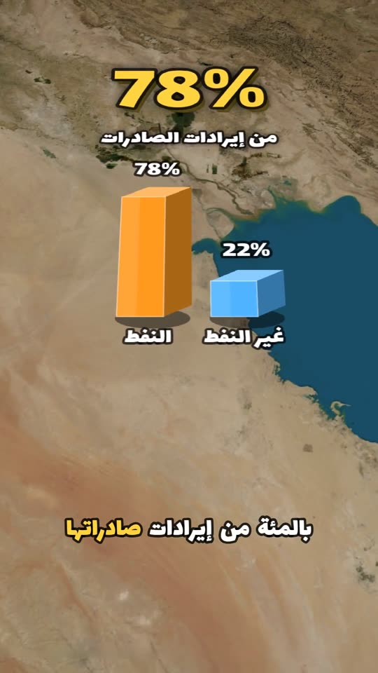

ماذا يصنعWhat it makes
لقطات حقيقية من فيديوهات صنعها iconMap نفسه.Real frames from videos made by iconMap itself.

كاميرا تنزل من الفضاءA camera that dives from space
كرة ثلاثية الأبعاد بصور ناسا تنزل إلى المكان بلا قطع، وكل دولة تُذكر تتلوّن في لحظتها.A 3D globe on NASA imagery that falls to the place with no cut; every country named lights up on its word.

أرقام تتحركNumbers that move
تركض أو تسقط أو تنقلب أو تدور كعدّاد السيارة، بجسم ثلاثي الأبعاد.They run, drop, flip or roll like an odometer, with a 3D body.

أعمدة ثلاثية الأبعاد3D columns on the map
أعمدة تنمو فوق الخريطة والرقم يعدّ فوقها، تحت كاميرا مائلة.Columns grow on the map with the value counting up, under a tilted camera.

أنهار ترسم نفسهاRivers that draw themselves
يُذكر النهر فيمشي على الخريطة بلونه واسمه العربي، من بيانات رسمية مفتوحة.Name a river and it runs across the map in colour with its Arabic name, from open official data.